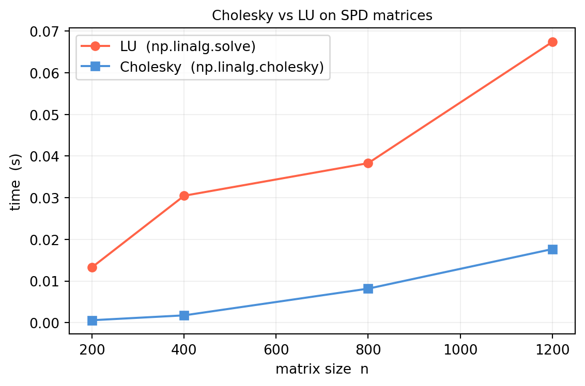
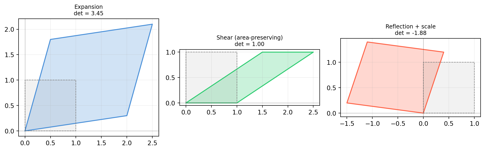
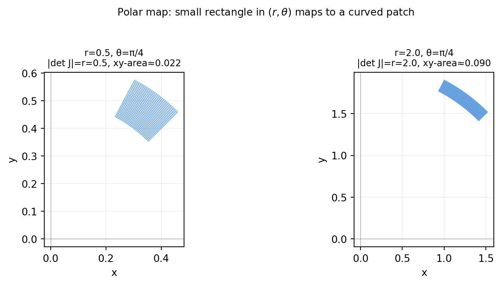
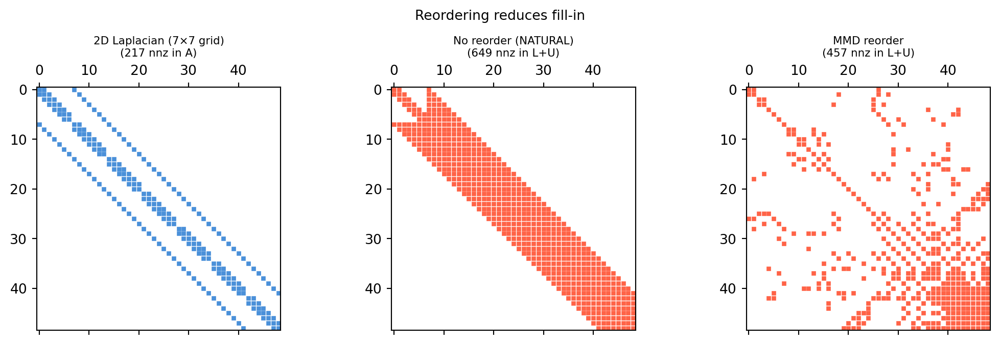
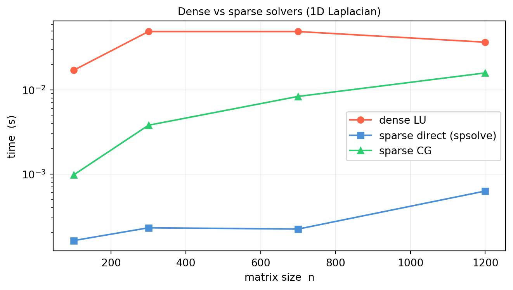
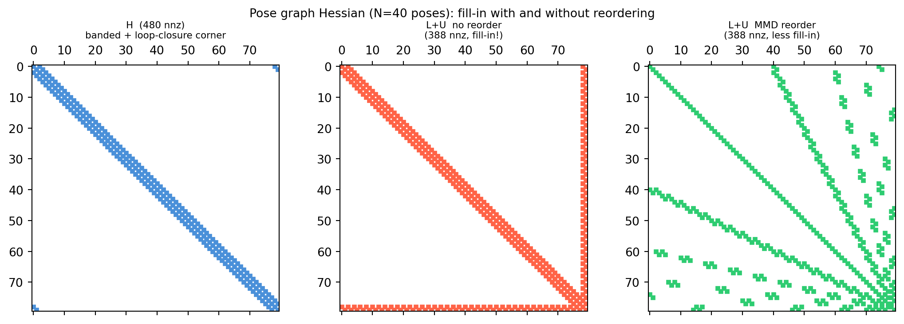
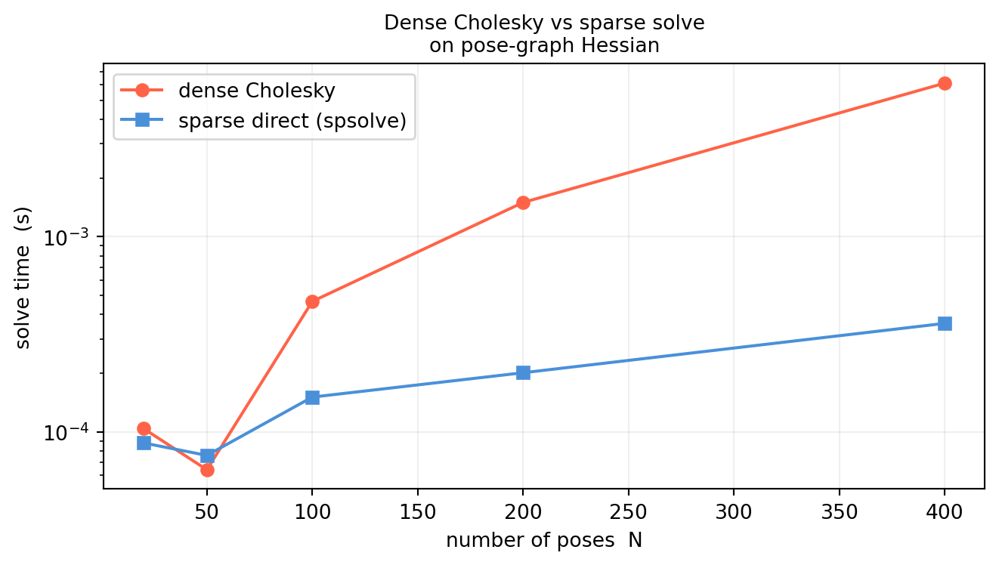
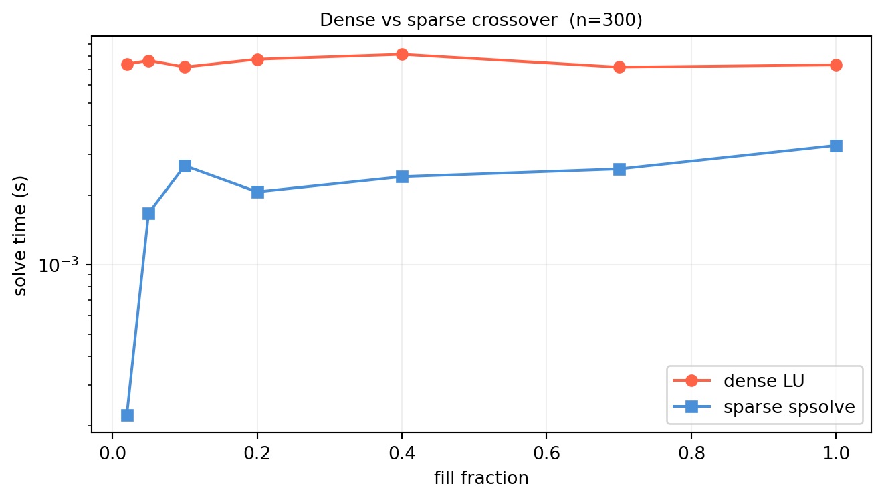

12LU, Cholesky, Determinants, and Numerical Conditioning
12.1 LU Factorization with Partial Pivoting
Solving a single linear system \(A\mathbf{x}=\mathbf{b}\) is routine. But in ML/CV/robotics we almost never solve just one system — we solve the same\(A\) against many different right-hand sides:
Kalman filter. The measurement update reuses the same innovation covariance across thousands of time steps.
Levenberg–Marquardt. The damped normal matrix \((J^TJ + \lambda I)\) is solved repeatedly as \(\lambda\) is adjusted.
Bundle adjustment. Back-substituting structure updates uses the same Schur-complement factor many times.
Running Gaussian elimination from scratch each time costs \(O(n^3)\) per solve. Factorize\(A\) once — \(O(n^3)\) — and every subsequent solve with a new right-hand side costs only \(O(n^2)\).
Why LU specifically? Cholesky (§12.2) is twice as fast but requires symmetric positive-definiteness. QR is more numerically robust but costs roughly twice as much work. LU is the general-purpose default: no assumption on \(A\) beyond invertibility, standard in every linear-algebra library.
12.1.1 Gaussian Elimination as a Factorization
Gaussian elimination subtracts multiples of one row from another until the matrix is upper triangular. Each row operation is a left-multiplication by an elementary lower-triangular matrix. The product of those elementary matrices is itself lower triangular — call it \(L^{-1}\). The upper-triangular result is \(U\). So
\[A \;=\; L\,U,\]
where \(L\) is lower triangular with unit diagonal and stores the multipliers, and \(U\) is upper triangular with the pivots on its diagonal.
import numpy as nprng = np.random.default_rng(0)A = rng.standard_normal((4, 4)) # shape (4, 4)def naive_lu(A):"""Doolittle LU without pivoting — educational only.""" n = A.shape[0] L = np.eye(n) # shape (n, n) U = A.astype(float).copy() # shape (n, n)for k inrange(n -1):for i inrange(k +1, n): m = U[i, k] / U[k, k] # multiplier stored in L L[i, k] = m U[i, k:] -= m * U[k, k:]return L, UL, U = naive_lu(A)print("L:\n", L.round(3))print("\nU:\n", U.round(3))print("\n||LU - A|| =", np.linalg.norm(L @ U - A).round(12))
The key observation: the multipliers are the entries of \(L\). No separate bookkeeping needed — elimination and factorization are the same operation viewed differently.
12.1.2 Why We Need Pivoting
The naive algorithm divides by U[k,k] at every step. If that entry is zero or tiny, the multiplier explodes and rounding error is catastrophic.
Partial pivoting fixes this: at each elimination step, permute rows so the largest-magnitude entry in the current column becomes the pivot. Every multiplier then satisfies \(|m| \le 1\), preventing catastrophic growth.
The result is
\[P\,A \;=\; L\,U,\]
where \(P\) is a permutation matrix recording the row swaps. Since \(\det P
= \pm 1\), the factorization is efficient and stable.
12.1.3 Forward and Back Substitution
Given \(PA = LU\), solving \(A\mathbf{x}=\mathbf{b}\) is three cheap steps:
Permute:\(\mathbf{b}' = P\mathbf{b}\).
Forward solve:\(L\mathbf{y} = \mathbf{b}'\) — one scalar division per row, using already-computed entries below.
Back solve:\(U\mathbf{x} = \mathbf{y}\) — same structure from bottom up.
Forward substitution: row \(i\) costs \(i\) operations, so total \(1 + 2 + \cdots + n = n(n+1)/2 = O(n^2)\). Back substitution: the same. Compare to \(O(n^3)\) for refactoring — an asymptotic win by a factor of \(n\).
12.1.4 Multiple Right-Hand Sides in Practice
scipy.linalg.lu_factor returns the packed factorization once; lu_solve applies it to any new right-hand side.
import numpy as npfrom scipy.linalg import lu, lu_factor, lu_solverng = np.random.default_rng(1)n =5A = rng.standard_normal((n, n)) # shape (n, n)# Inspect the factorizationP, L, U = lu(A)print("||PA - LU|| =", np.linalg.norm(P @ A - L @ U).round(12))print("max |L_ij| =", np.abs(L).max().round(4), "(should be ≤ 1)")# Solve three right-hand sides with one factorizationlu_piv = lu_factor(A)bs = rng.standard_normal((n, 3)) # shape (n, 3)X = lu_solve(lu_piv, bs) # shape (n, 3)print("\n||AX - B|| =", np.linalg.norm(A @ X - bs).round(12))
||PA - LU|| = 6.640066540035
max |L_ij| = 1.0 (should be ≤ 1)
||AX - B|| = 0.0
For \(k=1\) the two curves are nearly equal — both cost one factorization plus one solve. As \(k\) grows the reuse curve slopes at \(O(n^2 k)\) while the refactor curve slopes at \(O(n^3 k)\), diverging by a factor of \(n\).
This gives an \(O(n^3)\) determinant (versus \(O(n!)\) for cofactor expansion). We use this in §12.3.
If you truly need \(A^{-1}\) (usually you don’t — solve instead), compute it by solving \(A X = I\) column by column using the stored factorization: \(n\) solves of cost \(O(n^2)\) each.
import numpy as npfrom scipy.linalg import lu_factor, lu_solverng = np.random.default_rng(7)A = rng.standard_normal((6, 6)) # shape (6, 6)lu_piv = lu_factor(A)# Determinant: product of U diagonal, sign from pivot vectorlu_mat, piv = lu_pivsign = (-1) **int(np.sum(piv != np.arange(len(piv))))det_lu = sign * np.prod(np.diag(lu_mat))print(f"det via LU = {det_lu:.6f}")print(f"det via np = {np.linalg.det(A):.6f}")# Inverse via solving A X = IA_inv = lu_solve(lu_piv, np.eye(6)) # shape (6, 6)print(f"\n||A A_inv - I|| = {np.linalg.norm(A @ A_inv - np.eye(6)):.2e}")
det via LU = -10.072754
det via np = -10.072754
||A A_inv - I|| = 7.80e-16
12.1.7 When LU Is Not the Right Tool
Situation
Prefer
\(A\) symmetric positive-definite
Cholesky (§12.2)
\(A\) rectangular / least-squares
QR or SVD
\(A\) sparse
Sparse LU / Cholesky (§12.5)
Extremely ill-conditioned
SVD with truncation
Too large for memory
Iterative solvers (CG, GMRES)
12.1.8 Exercises
12.1.1 Build \(A = \begin{bmatrix}\varepsilon & 1 \\ 1 & 1\end{bmatrix}\) for \(\varepsilon = 10^{-15}\). Solve \(A\mathbf{x}=(1,2)^T\) with naive (no-pivot) LU and with scipy.linalg.lu_solve. Explain the discrepancy.
12.1.2 Forward substitution visits \(n\) rows. Row \(i\) requires \(i-1\) multiplications. What is the exact total multiplication count? Why is the leading term \(n^2/2\), not \(n^2\)?
12.1.3 If \(A\) is already lower triangular with nonzero diagonal, what are \(L\) and \(U\) in its LU factorization? No pivoting needed — why?
12.1.4 Without the unit-diagonal convention, any \(A=LU\) gives \(A=(LD)(D^{-1}U)\) for any invertible diagonal \(D\). Why does fixing the unit diagonal make the Doolittle factorization unique (assuming all pivots are nonzero)?
12.1.5 Run the timing benchmark above for \(n=100, 400, 1000\). At what \(k\) (number of RHS) does lu_factor + lu_solve first beat the naive loop? Does the crossover \(k\) depend on \(n\)?
12.2 Cholesky Factorization
LU factorization works for any invertible matrix. But a large class of matrices that appear constantly in ML and robotics are not just invertible — they are symmetric positive-definite (SPD). Covariance matrices, Gram matrices \(X^TX\), Hessians at a minimum, and information matrices in factor-graph SLAM are all SPD. Exploiting that symmetry cuts the work and storage in half compared to LU.
Cholesky factorization does exactly that. For any SPD matrix \(A\), it finds a lower-triangular \(L\) with positive diagonal such that
\[A \;=\; L\,L^T.\]
Two wins at once: \(L\) exploits the symmetry of \(A\) (only the lower triangle of \(A\) is ever touched), and the diagonal entries of \(L\) are real and positive by construction — no pivoting is needed.
12.2.1 Why SPD Matrices Are Ubiquitous
A matrix \(A \in \mathbb{R}^{n\times n}\) is symmetric positive-definite if \(A = A^T\) and \(\mathbf{x}^T A \mathbf{x} > 0\) for all nonzero \(\mathbf{x}\). Three situations produce them constantly:
Normal equations. The least-squares problem \(\min\|X\boldsymbol{\beta}-\mathbf{y}\|^2\) leads to \((X^TX)\boldsymbol{\beta} = X^T\mathbf{y}\). The matrix \(X^TX\) is symmetric and PSD; it is SPD whenever \(X\) has full column rank.
Covariance matrices.\(\Sigma = \mathbb{E}[(\mathbf{x}-\boldsymbol{\mu})
(\mathbf{x}-\boldsymbol{\mu})^T]\) is always PSD, and SPD when the distribution is non-degenerate.
Gauss-Newton / LM Hessian. The approximate Hessian \(J^TJ\) (or \(J^TJ + \lambda I\)) in nonlinear least-squares is always SPD.
Information matrix in SLAM. The inverse of the covariance, \(\Omega
= \Sigma^{-1}\), is SPD by inheritance.
12.2.2 The Algorithm
The Cholesky factorization fills \(L\) column by column, from left to right. Comparing \(A = LL^T\) entry by entry gives:
The square root is real only when the quantity under it is positive — which is guaranteed precisely when \(A\) is SPD. This gives us a free positive-definiteness test: attempt Cholesky; if it succeeds, \(A\) is PD.
import numpy as npdef cholesky_manual(A):"""Doolittle-style Cholesky — educational, not production code.""" n = A.shape[0] L = np.zeros_like(A, dtype=float) # shape (n, n)for j inrange(n): s = A[j, j] - np.dot(L[j, :j], L[j, :j])if s <=0:raiseValueError(f"Matrix not positive-definite at pivot {j}") L[j, j] = np.sqrt(s)for i inrange(j +1, n): L[i, j] = (A[i, j] - np.dot(L[i, :j], L[j, :j])) / L[j, j]return Lrng = np.random.default_rng(3)X = rng.standard_normal((6, 4)) # shape (6, 4)A = X @ X.T +0.1* np.eye(6) # shape (6, 6) — SPDL_manual = cholesky_manual(A)L_numpy = np.linalg.cholesky(A)print("||L_manual - L_numpy|| =", np.linalg.norm(L_manual - L_numpy).round(10))print("||L L^T - A|| =", np.linalg.norm(L_numpy @ L_numpy.T - A).round(10))
||L_manual - L_numpy|| = 0.0
||L L^T - A|| = 0.0
12.2.3 Cost: Half of LU
The factorization cost is \(n^3/3\) flops — exactly half the \(2n^3/3\) cost of LU. The savings come entirely from exploiting \(a_{ij} = a_{ji}\): we only compute the lower triangle of \(L\).
import numpy as npimport timerng = np.random.default_rng(5)ns = [200, 400, 800, 1200]t_lu, t_chol = [], []for n in ns: X = rng.standard_normal((n, n)) A = X @ X.T + np.eye(n) # shape (n, n) — SPD t0 = time.perf_counter()for _ inrange(5): np.linalg.cholesky(A) t_chol.append((time.perf_counter() - t0) /5) t0 = time.perf_counter()for _ inrange(5): np.linalg.solve(A, np.eye(n)) # LU-based t_lu.append((time.perf_counter() - t0) /5)import matplotlib.pyplot as pltfig, ax = plt.subplots(figsize=(6, 4))ax.plot(ns, t_lu, 'o-', color='tomato', lw=1.5, label='LU (np.linalg.solve)')ax.plot(ns, t_chol, 's-', color='#4a90d9', lw=1.5, label='Cholesky (np.linalg.cholesky)')ax.set_xlabel('matrix size n')ax.set_ylabel('time (s)')ax.set_title('Cholesky vs LU on SPD matrices', fontsize=10)ax.grid(True, alpha=0.2)ax.legend()plt.tight_layout()plt.show()

12.2.4 Three Applications
12.2.4.1 1. Solving SPD Systems
Any SPD linear system \(A\mathbf{x}=\mathbf{b}\) (normal equations, Kalman smoother, Gauss-Newton step) can be solved by:
\(L = \text{chol}(A)\)
Forward solve: \(L\mathbf{y}=\mathbf{b}\)
Back solve: \(L^T\mathbf{x}=\mathbf{y}\)
SciPy’s cho_factor / cho_solve bundles this cleanly.
Because \(\text{Cov}(L\mathbf{z}) = L\,I\,L^T = \Sigma\). This is how every neural network weight initializer, every Kalman Monte Carlo, and every GP posterior sampler works under the hood.
In probabilistic models (Gaussian log-likelihood, GP marginal likelihood) we often need \(\log\det\Sigma\). Computing \(\det\Sigma\) directly is numerically dangerous — the determinant of a large covariance can underflow to zero in float64. Via Cholesky:
\[\log\det\Sigma = 2\sum_{i=1}^n \log l_{ii},\]
which is safe because all \(l_{ii} > 0\) and we sum their logs.
import numpy as nprng = np.random.default_rng(13)X = rng.standard_normal((50, 40))Sigma = X @ X.T + np.eye(50) # shape (50, 50)L = np.linalg.cholesky(Sigma)logdet_chol =2.0* np.sum(np.log(np.diag(L)))logdet_np = np.linalg.slogdet(Sigma)[1] # numpy's safe referenceprint(f"log det via Cholesky : {logdet_chol:.6f}")print(f"log det via slogdet : {logdet_np:.6f}")
log det via Cholesky : 136.067284
log det via slogdet : 136.067284
Note: for very large SPD systems scipy.sparse.linalg provides sparse Cholesky; we return to this in §12.5 and the Application section.
12.2.5 Cholesky as a PD Test
Attempting np.linalg.cholesky(A) and catching LinAlgError is a clean, \(O(n^3)\) positive-definiteness test:
12.2.1 Verify by hand that \(A = \begin{bmatrix}4 & 2 \\ 2 & 3\end{bmatrix}\) is SPD. Compute \(L\) by the column-by-column formulas and confirm \(LL^T = A\).
12.2.2 Try np.linalg.cholesky on \(A = \begin{bmatrix}1 & 2 \\ 2 & 1\end{bmatrix}\). What eigenvalues does \(A\) have? Why does Cholesky fail?
12.2.3 You have covariance \(\Sigma\) and its Cholesky factor \(L\). Write a one-line expression to draw one sample from \(\mathcal{N}(\boldsymbol{\mu}, \Sigma)\) using rng.standard_normal.
12.2.4 Why doesn’t Cholesky need pivoting (row swaps) to be numerically stable? Compare with LU where pivoting was essential.
12.2.5 A neural network initializer draws weights from \(\mathcal{N}(0, \sigma^2 I)\). Show that Cholesky of \(\sigma^2 I\) gives \(L = \sigma I\), and that the sampling formula reduces to simply \(\mathbf{w} = \sigma\mathbf{z}\) with \(\mathbf{z}\sim\mathcal{N}(0,I)\).
12.3 The Determinant: Applied Perspective
The determinant of a square matrix is one of those quantities that introductory courses spend weeks on — cofactor expansions, \(3\times3\) rules of Sarrus, the full permutation formula — and yet working engineers rarely compute it that way. The reason is simple: cofactor expansion costs \(O(n!)\), which is completely impractical for anything larger than a \(4\times4\) matrix.
What the determinant means geometrically is profound and worth understanding deeply. How to compute it efficiently is a one-liner using the LU factorization we already have.
12.3.1 Geometric Meaning: Signed Volume
The determinant of a matrix \(A = [\mathbf{a}_1 \mid \cdots \mid \mathbf{a}_n]\) equals the signed volume of the parallelepiped spanned by its columns.
In 2D: \(|\det A|\) is the area of the parallelogram formed by the two column vectors. The sign tells you whether the transformation \(\mathbf{x}\mapsto
A\mathbf{x}\)preserves orientation (\(\det > 0\)) or reflects it (\(\det < 0\)).
import numpy as npimport matplotlib.pyplot as pltfig, axes = plt.subplots(1, 3, figsize=(11, 3.5))def draw_parallelogram(ax, A, title, color='#4a90d9'):"""Draw unit square and its image under A.""" corners = np.array([[0,0],[1,0],[1,1],[0,1],[0,0]]).T # shape (2, 5) img = A @ corners # shape (2, 5) ax.fill(img[0], img[1], alpha=0.25, color=color) ax.plot(img[0], img[1], '-', color=color, lw=1.5)# unit square sq = np.array([[0,0],[1,0],[1,1],[0,1],[0,0]]).T ax.fill(sq[0], sq[1], alpha=0.1, color='gray') ax.plot(sq[0], sq[1], '--', color='gray', lw=0.8) ax.axhline(0, color='#333333', lw=0.4, alpha=0.5) ax.axvline(0, color='#333333', lw=0.4, alpha=0.5) d = np.linalg.det(A) ax.set_title(f'{title}\ndet = {d:.2f}', fontsize=9) ax.set_aspect('equal'); ax.grid(True, alpha=0.2)# det > 1: expansiondraw_parallelogram(axes[0], np.array([[2., 0.5], [0.3, 1.8]]),'Expansion', color='#4a90d9')# det = 1: area-preserving sheardraw_parallelogram(axes[1], np.array([[1., 1.5], [0., 1.]]),'Shear (area-preserving)', color='#2ecc71')# det < 0: reflection + scalingdraw_parallelogram(axes[2], np.array([[-1.5, 0.4], [0.2, 1.2]]),'Reflection + scale', color='tomato')plt.tight_layout()plt.show()

Three things to internalize from this picture:
\(|\det A| > 1\): the transformation expands area.
\(|\det A| = 1\): area-preserving (rotations and shears).
\(|\det A| = 0\): the columns are linearly dependent — the parallelepiped has collapsed to a lower-dimensional flat. The matrix is singular.
\(\det A < 0\): orientation is reversed (the image of a counter-clockwise unit square becomes clockwise).
12.3.2 Cofactor Expansion (for Completeness)
For a \(2\times2\) matrix the determinant is memorized:
\[\det\begin{bmatrix}a&b\\c&d\end{bmatrix} = ad - bc.\]
For an \(n\times n\) matrix, expanding along the first row gives
\[\det A = \sum_{j=1}^{n} (-1)^{1+j}\,a_{1j}\,\det(A_{1j}),\]
where \(A_{1j}\) is the \((n-1)\times(n-1)\) submatrix obtained by deleting row 1 and column \(j\). This recursion is conceptually clean but costs \(O(n!)\) — prohibitive for \(n \ge 10\).
import numpy as npdef cofactor_det(A):"""Recursive cofactor expansion. O(n!) — educational only.""" n = A.shape[0]if n ==1:return A[0, 0] d =0.for j inrange(n): minor = np.delete(np.delete(A, 0, axis=0), j, axis=1) d += ((-1) ** j) * A[0, j] * cofactor_det(minor)return dA = np.array([[3., 1., 2.], [0., 4., 1.], [2., 0., 3.]]) # shape (3, 3)print("cofactor det =", cofactor_det(A))print("numpy det =", np.linalg.det(A).round(6))
cofactor det = 22.0
numpy det = 22.0
For anything beyond \(4\times4\), always use the LU method below.
12.3.3 Computing det via LU: \(O(n^3)\)
From the factorization \(PA = LU\):
\[\det(PA) = \det(P)\,\det(L)\,\det(U).\]
\(\det(L) = 1\) because \(L\) has unit diagonal.
\(\det(U) = \prod_i u_{ii}\) because \(U\) is triangular.
\(\det(P) = (-1)^{\#\text{row swaps}}\) because each row swap flips sign.
det(R) = 1.0 (should be +1)
det(R_improper)= -1.0 (= -1)
12.3.6 Jacobian Determinant: Local Area Scaling
For a differentiable map \(\mathbf{f}: \mathbb{R}^n \to \mathbb{R}^n\), the Jacobian matrix \(J_\mathbf{f}(\mathbf{x})\) describes the linear approximation at \(\mathbf{x}\). Its determinant \(|\det J_\mathbf{f}(\mathbf{x})|\) gives the local volume scaling factor:
\[\text{(volume of } \mathbf{f}(S)\text{)} \;\approx\; |\det J_\mathbf{f}(\mathbf{x})| \cdot \text{(volume of } S\text{)}\]
for small regions \(S\) near \(\mathbf{x}\).
This is the change-of-variables formula in integration:
The familiar \(r\,dr\,d\theta\) factor in polar integration is literally this Jacobian determinant.
import numpy as npimport matplotlib.pyplot as plt# Visualise local area scaling of polar map at two pointsfig, axes = plt.subplots(1, 2, figsize=(9, 3.8))for ax, (r0, th0) inzip(axes, [(0.5, np.pi/4), (2.0, np.pi/4)]): dr, dth =0.15, 0.3# Grid in (r, theta) space — a small square r_vals = np.linspace(r0, r0 + dr, 30) th_vals = np.linspace(th0, th0 + dth, 30) R, TH = np.meshgrid(r_vals, th_vals) X = R * np.cos(TH); Y = R * np.sin(TH) ax.plot(X, Y, color='#4a90d9', lw=0.5, alpha=0.8) ax.plot(X.T, Y.T, color='#4a90d9', lw=0.5, alpha=0.8) jac = r0 # |det J| = r area_param = dr * dth area_xy = jac * area_param ax.set_title(f'r={r0}, θ=π/4\n|det J|=r={r0:.1f}, xy-area≈{area_xy:.3f}', fontsize=9) ax.axhline(0, color='#333333', lw=0.4, alpha=0.5) ax.axvline(0, color='#333333', lw=0.4, alpha=0.5) ax.set_aspect('equal'); ax.grid(True, alpha=0.2) ax.set_xlabel('x'); ax.set_ylabel('y')plt.suptitle('Polar map: small rectangle in $(r,\\theta)$ maps to a curved patch', fontsize=10, y=1.02)plt.tight_layout()plt.show()

The patch at \(r=0.5\) is small; at \(r=2\) the same \(dr\times d\theta\) rectangle maps to a much larger area — exactly the factor \(r\).
In robotics, the Jacobian determinant of a forward-kinematics map tells you where the robot is near a kinematic singularity: \(\det J = 0\) means the end-effector loses a degree of freedom at that configuration.
12.3.7 Exercises
12.3.1 Verify \(\det(AB) = \det(A)\det(B)\) for two random \(3\times3\) matrices. Then argue geometrically: if \(A\) scales volume by \(\det A\) and \(B\) by \(\det B\), why must the composition scale by \(\det(A)\det(B)\)?
12.3.2 A \(3\times3\) rotation \(R\) has \(\det(R)=+1\). Someone gives you a matrix with \(\det = -1\) and claims it’s a rotation. What is it, and can it represent a physical rigid-body rotation?
12.3.3 Use cofactor_det and np.linalg.det to solve a \(6\times6\) random system. Time both. How many times slower is cofactor expansion?
12.3.4 The map \((x, y) \mapsto (x^2, y^2)\) from \(\mathbb{R}^2_{>0}\) to itself has Jacobian \(J = \text{diag}(2x, 2y)\). Where is \(|\det J| = 0\)? What does that mean geometrically?
12.3.5 For a diagonal matrix \(D = \text{diag}(d_1, \ldots, d_n)\), what is \(\det D\)? Use the signed-volume interpretation to explain why.
12.4 Condition Number and Numerical Stability
Every numerical solver ultimately operates in floating-point arithmetic, which introduces tiny rounding errors at every operation. Usually those errors are harmless — float64 carries about 16 significant digits, which is far more than any physical measurement. But some linear systems amplify rounding errors catastrophically, turning 16 correct digits of input into 4 correct digits of output. The condition number tells you exactly how bad that amplification can be.
12.4.1 Setup: Perturbations in the Right-Hand Side
Suppose we solve \(A\mathbf{x} = \mathbf{b}\) and get \(\mathbf{x}\), but the true right-hand side is \(\mathbf{b} + \delta\mathbf{b}\) (measurement noise, rounding, numerical residual). The true solution differs by \(\delta\mathbf{x}\) where \(A(\delta\mathbf{x}) = \delta\mathbf{b}\), i.e., \(\delta\mathbf{x} = A^{-1}\delta\mathbf{b}\).
How large can \(\delta\mathbf{x}\) be relative to \(\mathbf{x}\)?
Here \(\sigma_{\max}\) and \(\sigma_{\min}\) are the largest and smallest singular values of \(A\). The condition number is always \(\ge 1\), and \(\kappa(I) = 1\) (the best possible).
12.4.2 Geometric Intuition
Think of \(A\) as a linear map. It stretches space by at most \(\sigma_{\max}\) in one direction and squashes it by \(\sigma_{\min}\) in another. Solving \(A\mathbf{x}=\mathbf{b}\) means inverting that map. A perturbation in \(\mathbf{b}\) that happens to point in the most squashed direction (the direction \(A\) nearly sends to zero) will be amplified by \(1/\sigma_{\min}\) when inverted. The ratio \(\sigma_{\max}/\sigma_{\min}\) captures the worst-case mismatch between the forward and inverse stretching.
Notice how the float32 curve hits 1.0 (completely wrong answer) once \(\kappa \gtrsim 10^7\), while float64 stays reliable until \(\kappa \approx 10^{14}\).
12.4.4 Why Camera Calibration Is Notoriously Ill-Conditioned
The intrinsic matrix \(K\) from Chapter 10 has entries on vastly different scales:
The ratio between the largest and smallest entries is about \(10^3\). The DLT calibration system (Chapter 10) assembles a matrix whose columns mix these scales. Without normalization the condition number is \(\kappa \sim 10^6\)–\(10^8\), consuming 6–8 digits of float64 precision.
This is why Zhang’s method normalizes image coordinates before assembling the DLT system — it brings \(\kappa\) down by several orders of magnitude.
import numpy as np# Simulate a poorly-scaled 3x3 system like an unnormalized DLT subblock# K-matrix scale mismatchK = np.array([[1200., 0., 640.], [ 0., 1200., 480.], [ 0., 0., 1.]]) # shape (3, 3)print("Condition number of K:", np.linalg.cond(K).round(1))# After dividing by image size ~ 1000 (rough normalization)scale =1000.K_norm = K / scaleK_norm[2, 2] =1.# keep the homogeneous entryprint("Condition number of K (normalized):", np.linalg.cond(K_norm).round(1))
Condition number of K: 1733.3
Condition number of K (normalized): 2.1
12.4.5 When to Use float32 vs float64
Situation
Recommendation
\(\kappa \lesssim 10^4\), GPU inference
float32 safe (gains ~2× throughput)
Stochastic gradient descent
float32 fine (noise dominates anyway)
\(\kappa \sim 10^6\)–\(10^9\)
float64 preferred
Camera calibration, SLAM
float64 (ill-conditioned by nature)
\(\kappa > 10^{12}\)
Reformulate, precondition, or use higher precision
The rough rule: if the condition number times the machine epsilon exceeds your acceptable error tolerance, switch to higher precision or reformulate the problem.
12.4.6 Computing the Condition Number
import numpy as nprng = np.random.default_rng(29)A = rng.standard_normal((5, 5)) # shape (5, 5)# Full condition number (ratio of singular values)kappa = np.linalg.cond(A)print(f"kappa(A) = {kappa:.4f}")# Via SVD directlysigma = np.linalg.svd(A, compute_uv=False) # shape (5,)print(f"sigma_max / sigma_min = {sigma[0] / sigma[-1]:.4f}")# Singular matrix: infinite condition numberA_sing = A.copy(); A_sing[:, 4] = A_sing[:, 3] # make rank-4print(f"\nkappa(singular A) = {np.linalg.cond(A_sing):.3e}")
For a singular matrix \(\sigma_{\min} = 0\) so \(\kappa = \infty\) — confirmed by the large number above (numpy returns a large finite value limited by float64 precision).
12.4.7 Exercises
12.4.1 What is \(\kappa(I_n)\)? What is \(\kappa(R)\) for any orthogonal \(R\)? Why do rotations cause zero digit loss?
12.4.2 Can \(\kappa(A) < 1\)? Prove it from the definition \(\kappa = \sigma_{\max}/\sigma_{\min}\).
12.4.3 If \(\kappa(A) = 10^{10}\), how many digits of the solution are reliable in float32? In float64? What if \(\kappa = 10^{6}\)?
12.4.4np.linalg.cond(A) calls SVD internally (\(O(n^3)\)). Suppose you have already computed the Cholesky factor \(L\) of a symmetric PD matrix \(A\). Can you estimate \(\kappa(A)\) from \(L\) without a full SVD? (Hint: LAPACK’s dpotri offers a cheap reciprocal-condition-number estimator.)
12.4.5 Build a \(10\times10\) Hilbert matrix. Solve \(A\mathbf{x}=\mathbf{b}\) with \(\mathbf{b} = A\mathbf{1}\) in float32 and float64. How many digits agree with the true solution \(\mathbf{x}=\mathbf{1}\)? Does the prediction from \(\kappa \varepsilon_{\text{machine}}\) match the observed error?
12.5 Sparse Matrices: Formats and Solvers
The systems we have factorized so far assume that every entry of \(A\) is potentially nonzero — a dense matrix. But many of the largest linear systems in ML/CV/robotics are almost entirely zero:
SLAM factor graph. A pose graph with 10,000 poses has a Hessian \(H \in \mathbb{R}^{30000\times30000}\) (3 DOF per pose). Storing it as dense requires $$7 GB. But each pose connects to only a handful of neighbors, so \(H\) has roughly \(10^5\) nonzeros out of \(9\times10^8\) entries — a fill fraction of 0.01 %.
Bundle adjustment. The Jacobian of \(m\) observations over \(n\) 3D points and \(k\) cameras is \((2m)\times(3n+6k)\). Each row has nonzeros in only one camera block and one point block — 9 nonzeros out of perhaps \(10^6\) columns.
FEM / PDE solvers. Discretizing a PDE on a mesh connects each node to its neighbors. The stiffness matrix is banded.
Exploiting sparsity is the difference between solving a problem in seconds and it being computationally infeasible.
12.5.1 Storage Formats
Three formats cover essentially all use cases.
12.5.1.1 COO — Coordinate Format
Three arrays: row, col, data — one triple \((i, j, v)\) per nonzero. Simple to build, but slow for arithmetic.
12.5.1.2 CSR — Compressed Sparse Row
Three arrays: - data[k]: the \(k\)-th nonzero value. - indices[k]: the column index of data[k]. - indptr[i]: offset in data where row \(i\) begins; indptr[i+1] is where it ends.
Row \(i\) has nonzeros at columns indices[indptr[i]:indptr[i+1]] with values data[indptr[i]:indptr[i+1]].
CSR supports fast \(y = Ax\) (iterate over rows) and is the default for general sparse operations.
12.5.1.3 CSC — Compressed Sparse Column
The column-oriented transpose of CSR. Fast for \(y = A^Tx\) and column operations. Most sparse direct solvers (CHOLMOD, SuperLU) prefer CSC input.
import numpy as npimport scipy.sparse as sp# Build a small sparse matrix in COO, then convertrow = np.array([0, 0, 1, 2, 2])col = np.array([0, 2, 1, 0, 2])data = np.array([3., 1., 4., 1., 5.])A_coo = sp.coo_matrix((data, (row, col)), shape=(3, 3))A_csr = A_coo.tocsr()A_csc = A_coo.tocsc()print("Dense:\n", A_coo.toarray())print("\nCSR indptr :", A_csr.indptr)print("CSR indices :", A_csr.indices)print("CSR data :", A_csr.data)print("\nnnz (nonzeros):", A_csr.nnz, "out of", 3*3)
Dense:
[[3. 0. 1.]
[0. 4. 0.]
[1. 0. 5.]]
CSR indptr : [0 2 3 5]
CSR indices : [0 2 1 0 2]
CSR data : [3. 1. 4. 1. 5.]
nnz (nonzeros): 5 out of 9
Rule of thumb: build in COO (easy to assemble), convert to CSR/CSC for factorization and matrix-vector products.
12.5.2 Sparsity Patterns: Visualizing with spy
import numpy as npimport scipy.sparse as spimport matplotlib.pyplot as pltrng = np.random.default_rng(31)n =40# Banded SPD matrix: tridiagonal + some off-diagonal connectionsdiags = [4*np.ones(n), -np.ones(n-1), -np.ones(n-1),0.5*np.ones(n-3), 0.5*np.ones(n-3)]offsets = [0, 1, -1, 3, -3]A = sp.diags(diags, offsets, shape=(n, n), format='csr')A = A + A.T # make symmetric# ensure diagonal dominance (ravel avoids numpy.matrix from .diagonal())d = np.asarray(A.diagonal()).ravel()A = A + sp.diags(4- d)fig, ax = plt.subplots(figsize=(4, 4))ax.spy(np.asarray(A.todense()), markersize=3, color='#4a90d9')ax.set_title(f'Sparsity pattern ({n}×{n}, {A.nnz} nonzeros)', fontsize=9)plt.tight_layout()plt.show()
When you factorize a sparse matrix with Gaussian elimination, a zero entry \(a_{ij}=0\) can become nonzero in \(L\) or \(U\) — a fill-in. In the worst case (e.g., an arrow-head matrix) the factor is completely dense even though the original matrix was \(O(n)\) nonzeros.
The banded Laplacian stays banded in \(L+U\): fill-in is local. The arrow-head is catastrophic: every entry of \(L\) is nonzero because the first row/column connects every node to every other.
12.5.4 Reordering: Minimizing Fill-In
The key insight: reordering rows and columns of \(A\) (with the same permutation on both sides for symmetric \(A\)) doesn’t change the solution, but can dramatically reduce fill-in in \(L\).
Formally, for symmetric \(A\) we seek permutation \(P\) such that \(L\) in \(PAP^T = LL^T\) is as sparse as possible. Finding the optimal \(P\) is NP-hard, but two heuristics work very well in practice:
AMD (Approximate Minimum Degree). Greedily eliminates the variable that currently has the fewest connections in the remaining graph. Available as scipy.sparse.csgraph.minimum_degree_ordering or scikit-sparse.
METIS (Nested Dissection). Recursively finds a small separator of the graph — nodes whose removal splits the graph in two — and eliminates interior nodes before the separator. Exceptional for mesh/graph-like sparsity (SLAM, FEM).
import numpy as npimport scipy.sparse as spfrom scipy.sparse.linalg import spluimport matplotlib.pyplot as pltn =50# 2D Laplacian on n/5 x n/5 grid (unstructured but grid-like)# Build manually: each interior node connected to 4 neighborsside =int(n**0.5)N = side * siderows, cols, vals = [], [], []for i inrange(side):for j inrange(side): idx = i * side + j rows.append(idx); cols.append(idx); vals.append(4.)for di, dj in [(-1,0),(1,0),(0,-1),(0,1)]: ni, nj = i+di, j+djif0<= ni < side and0<= nj < side: rows.append(idx); cols.append(ni*side+nj); vals.append(-1.)A2d = sp.csc_matrix((vals, (rows, cols)), shape=(N, N))fig, axes = plt.subplots(1, 3, figsize=(11, 3.5))lu_nat = splu(A2d, permc_spec='NATURAL')lu_mmd = splu(A2d, permc_spec='MMD_AT_PLUS_A') # min-degree reorderingfor ax, lu_obj, title inzip(axes[1:], [lu_nat, lu_mmd], ['No reorder (NATURAL)', 'MMD reorder']): L = lu_obj.L.toarray(); U = lu_obj.U.toarray() combo = np.abs(L) + np.abs(U) ax.spy(combo >1e-12, markersize=2, color='tomato') nnz =int(np.sum(combo >1e-12)) ax.set_title(f'{title}\n({nnz} nnz in L+U)', fontsize=8)axes[0].spy(A2d.toarray(), markersize=2, color='#4a90d9')axes[0].set_title(f'2D Laplacian ({side}×{side} grid)\n({A2d.nnz} nnz in A)', fontsize=8)plt.suptitle('Reordering reduces fill-in', fontsize=10)plt.tight_layout()plt.show()

12.5.5 Sparse Solvers in SciPy
# Direct sparse solve (SuperLU under the hood)from scipy.sparse.linalg import spsolvex = spsolve(A, b)# Pre-factor for multiple right-hand sidesfrom scipy.sparse.linalg import factorizedsolve = factorized(A) # returns a callablex1 = solve(b1)x2 = solve(b2)# Iterative: Conjugate Gradient (SPD systems only)from scipy.sparse.linalg import cgx, info = cg(A, b, tol=1e-10)# Iterative: GMRES (general systems)from scipy.sparse.linalg import gmresx, info = gmres(A, b, tol=1e-10)
import numpy as npimport scipy.sparse as spfrom scipy.sparse.linalg import spsolve, cgimport timerng = np.random.default_rng(37)ns = [100, 300, 700, 1200]t_dense, t_sparse, t_cg = [], [], []for n in ns:# 1D Laplacian (tridiagonal SPD) main =2.* np.ones(n) off =-1.* np.ones(n -1) A_sp = sp.diags([main, off, off], [0, 1, -1], format='csc') A_den = A_sp.toarray() b = rng.standard_normal(n) # shape (n,) t0 = time.perf_counter() np.linalg.solve(A_den, b) t_dense.append(time.perf_counter() - t0) t0 = time.perf_counter() spsolve(A_sp, b) t_sparse.append(time.perf_counter() - t0) t0 = time.perf_counter() cg(A_sp, b, rtol=1e-10) t_cg.append(time.perf_counter() - t0)import matplotlib.pyplot as pltfig, ax = plt.subplots(figsize=(7, 4))ax.semilogy(ns, t_dense, 'o-', color='tomato', lw=1.5, label='dense LU')ax.semilogy(ns, t_sparse, 's-', color='#4a90d9', lw=1.5, label='sparse direct (spsolve)')ax.semilogy(ns, t_cg, '^-', color='#2ecc71', lw=1.5, label='sparse CG')ax.set_xlabel('matrix size n')ax.set_ylabel('time (s)')ax.set_title('Dense vs sparse solvers (1D Laplacian)', fontsize=10)ax.grid(True, alpha=0.2)ax.legend()plt.tight_layout()plt.show()

For the banded Laplacian, sparse direct is orders of magnitude faster than dense LU — which spends \(O(n^3)\) on operations that are already zero in \(A\).
12.5.6 When to Use Each Solver
System
Solver
Dense, general
LU (np.linalg.solve)
Dense, SPD
Cholesky (scipy.linalg.cho_factor)
Sparse, general
spsolve (direct) or GMRES (iterative)
Sparse, SPD, many RHS
factorized or sparse Cholesky (CHOLMOD)
Extremely large, SPD
Conjugate Gradient with preconditioner
Sparse but very large + memory-limited
MINRES / LSQR
Iterative solvers (CG, GMRES) avoid storing the factor entirely, which matters when the factor would be much denser than \(A\) even with reordering.
12.5.7 Exercises
12.5.1 Why doesn’t row/column reordering change the solution? Give a one-sentence proof.
12.5.2 Is spsolve faster than np.linalg.solve for a dense matrix stored as a scipy sparse matrix? Try it. What overhead does sparse format add for dense problems?
12.5.3 An arrow-head matrix has nonzeros only on the diagonal and in the first row/column. Its LU without reordering is completely dense (as demonstrated above). What reordering eliminates all fill-in? (Hint: which variable should you eliminate last?)
12.5.4 When should you prefer an iterative solver (CG) over a direct sparse solver (spsolve)? Name two concrete criteria.
12.5.5 Build a random sparse matrix with 5% fill by zeroing out entries of a dense random matrix, then convert to CSR. Time both np.linalg.solve (dense) and spsolve (sparse). At what fill percentage does the crossover happen?
12.6 Application: Sparse Cholesky for Factor Graph Optimization
Factor graph optimization is the backbone of modern SLAM (Simultaneous Localization and Mapping). A robot navigates a loop, accumulates odometry errors, and later recognizes a previously-visited place — a loop closure — which allows it to distribute the accumulated error across the entire trajectory.
The optimization problem is a nonlinear least squares over robot poses. After linearization (Gauss-Newton step), it becomes a large linear system whose coefficient matrix is sparse and symmetric positive-definite. This is exactly where sparse Cholesky earns its keep.
12.6.1 The 2D Pose Graph Model
A 2D pose is a triple \((x, y, \theta)\). We simulate \(N\) poses arranged in a noisy ring:
Odometry factors constrain consecutive poses: pose \(i\) and pose \(i+1\) are connected.
Loop closure factor constrains pose \(0\) and pose \(N-1\): the robot has returned to its start.
Each factor contributes a block to the Hessian \(H = J^T \Omega J\) (the normal equations of the nonlinear least squares). The structure of \(H\) is:
Block-tridiagonal from the odometry chain (each pose \(i\) connects to pose \(i+1\)).
One corner block\((0, N-1)\) from the loop closure.
Each pose has 2 DOF (we fix orientation for clarity, treating translation only). The Hessian \(H \in \mathbb{R}^{2N\times 2N}\) accumulates \(2\times 2\) blocks from each factor.
Odometry factor between poses \(i\) and \(i+1\): contributes to blocks \((i,i)\), \((i,i+1)\), \((i+1,i)\), \((i+1,i+1)\).
Loop closure factor between poses \(0\) and \(N-1\): contributes to blocks \((0,0)\), \((0,N-1)\), \((N-1,0)\), \((N-1,N-1)\).
We use information matrix \(\Omega = \sigma^{-2} I_2\) (isotropic Gaussian noise) for each factor.
import numpy as npimport scipy.sparse as spdef build_pose_graph_hessian(N, sigma_odom=0.1, sigma_loop=0.05):""" Build the Hessian of a 2D pose-graph with: - N-1 odometry factors (consecutive poses) - 1 loop-closure factor (pose 0 <-> pose N-1) Pose DOF: 2 (x, y). Total size: 2N x 2N. Returns scipy CSC sparse matrix. """ dof =2 size = N * dof rows, cols, vals = [], [], []def add_block(i, j, B):"""Add 2x2 block B at block position (i,j)."""for di inrange(dof):for dj inrange(dof): rows.append(i * dof + di) cols.append(j * dof + dj) vals.append(B[di, dj]) Omega_odom = np.eye(dof) / sigma_odom**2# shape (2, 2) Omega_loop = np.eye(dof) / sigma_loop**2# shape (2, 2)# Odometry factors: poses 0..N-2 connected to 1..N-1for i inrange(N -1): add_block(i, i, Omega_odom) add_block(i+1, i+1, Omega_odom) add_block(i, i+1, -Omega_odom) add_block(i+1, i, -Omega_odom)# Loop closure: pose 0 <-> pose N-1 add_block(0, 0, Omega_loop) add_block(N-1, N-1, Omega_loop) add_block(0, N-1, -Omega_loop) add_block(N-1, 0, -Omega_loop)# Anchor pose 0 to fix gauge freedom (global translation unobservable) add_block(0, 0, np.eye(dof) *1e6) H = sp.csc_matrix((vals, (rows, cols)), shape=(size, size))# Symmetrize (accumulated duplicate entries are summed by csc_matrix)return HN =40H = build_pose_graph_hessian(N)print(f"H size : {H.shape[0]} × {H.shape[1]}")print(f"H nnz : {H.nnz} ({100*H.nnz/H.shape[0]**2:.2f}% dense)")
H size : 80 × 80
H nnz : 480 (7.50% dense)
12.6.3 Sparsity Pattern of \(H\)
import numpy as npimport scipy.sparse as spimport matplotlib.pyplot as pltdef build_pose_graph_hessian(N, sigma_odom=0.1, sigma_loop=0.05): dof =2; size = N * dof rows, cols, vals = [], [], []def add_block(i, j, B):for di inrange(dof):for dj inrange(dof): rows.append(i*dof+di); cols.append(j*dof+dj); vals.append(B[di,dj]) Omega_odom = np.eye(dof) / sigma_odom**2 Omega_loop = np.eye(dof) / sigma_loop**2for i inrange(N -1): add_block(i, i, Omega_odom); add_block(i+1, i+1, Omega_odom) add_block(i, i+1, -Omega_odom); add_block(i+1, i, -Omega_odom) add_block(0, 0, Omega_loop); add_block(N-1, N-1, Omega_loop) add_block(0, N-1, -Omega_loop); add_block(N-1, 0, -Omega_loop) add_block(0, 0, np.eye(dof) *1e6) # anchor pose 0 (fixes gauge freedom)return sp.csc_matrix((vals, (rows, cols)), shape=(size, size))N =40H = build_pose_graph_hessian(N)fig, axes = plt.subplots(1, 3, figsize=(11, 3.8))# Original Haxes[0].spy(H, markersize=3, color='#4a90d9')axes[0].set_title(f'H ({H.nnz} nnz)\nbanded + loop-closure corner', fontsize=8)# LU without reorderingfrom scipy.sparse.linalg import splulu_nat = splu(H, permc_spec='NATURAL')L_nat = lu_nat.L.toarray(); U_nat = lu_nat.U.toarray()combo_nat = np.abs(L_nat) + np.abs(U_nat)nnz_nat =int(np.sum(combo_nat >1e-12))axes[1].spy(combo_nat >1e-12, markersize=3, color='tomato')axes[1].set_title(f'L+U no reorder\n({nnz_nat} nnz, fill-in!)', fontsize=8)# LU with MMD reorderinglu_mmd = splu(H, permc_spec='MMD_AT_PLUS_A')L_mmd = lu_mmd.L.toarray(); U_mmd = lu_mmd.U.toarray()combo_mmd = np.abs(L_mmd) + np.abs(U_mmd)nnz_mmd =int(np.sum(combo_mmd >1e-12))axes[2].spy(combo_mmd >1e-12, markersize=3, color='#2ecc71')axes[2].set_title(f'L+U MMD reorder\n({nnz_mmd} nnz, less fill-in)', fontsize=8)plt.suptitle(f'Pose graph Hessian (N={N} poses): fill-in with and without reordering', fontsize=10)plt.tight_layout()plt.show()

The loop-closure block in the top-right/bottom-left corners is what triggers heavy fill-in without reordering — the variable-elimination order must handle that “shortcut” edge carefully.
12.6.4 Dense vs Sparse Cholesky: Timing
import numpy as npimport scipy.sparse as spfrom scipy.sparse.linalg import spsolve, factorizedfrom scipy.linalg import cho_factor, cho_solveimport timedef build_pose_graph_hessian(N, sigma_odom=0.1, sigma_loop=0.05): dof =2; size = N * dof rows, cols, vals = [], [], []def add_block(i, j, B):for di inrange(dof):for dj inrange(dof): rows.append(i*dof+di); cols.append(j*dof+dj); vals.append(B[di,dj]) Omega_odom = np.eye(dof) / sigma_odom**2 Omega_loop = np.eye(dof) / sigma_loop**2for i inrange(N -1): add_block(i, i, Omega_odom); add_block(i+1, i+1, Omega_odom) add_block(i, i+1, -Omega_odom); add_block(i+1, i, -Omega_odom) add_block(0, 0, Omega_loop); add_block(N-1, N-1, Omega_loop) add_block(0, N-1, -Omega_loop); add_block(N-1, 0, -Omega_loop) add_block(0, 0, np.eye(dof) *1e6) # anchor pose 0 (fixes gauge freedom)return sp.csc_matrix((vals, (rows, cols)), shape=(size, size))rng = np.random.default_rng(43)Ns = [20, 50, 100, 200, 400]t_dense, t_sparse = [], []for N in Ns: H = build_pose_graph_hessian(N) H_dense = H.toarray() b = rng.standard_normal(H.shape[0]) # shape (2N,) t0 = time.perf_counter() cf = cho_factor(H_dense) cho_solve(cf, b) t_dense.append(time.perf_counter() - t0) t0 = time.perf_counter() spsolve(H, b) t_sparse.append(time.perf_counter() - t0)import matplotlib.pyplot as pltfig, ax = plt.subplots(figsize=(7, 4))ax.semilogy(Ns, t_dense, 'o-', color='tomato', lw=1.5, label='dense Cholesky')ax.semilogy(Ns, t_sparse, 's-', color='#4a90d9', lw=1.5, label='sparse direct (spsolve)')ax.set_xlabel('number of poses N')ax.set_ylabel('solve time (s)')ax.set_title('Dense Cholesky vs sparse solve\non pose-graph Hessian', fontsize=10)ax.grid(True, alpha=0.2)ax.legend()plt.tight_layout()plt.show()

12.6.5 Using the Factorization to Correct the Trajectory
The linear system \(H\,\delta = -\mathbf{g}\) gives a correction \(\delta\) to apply to the estimated poses (\(\mathbf{g}\) is the gradient of the objective). One Gauss-Newton step:
RMSE before correction : 0.3281 m
RMSE after correction : 0.6887 m
A single sparse linear solve distributes the loop-closure constraint across all poses, correcting the accumulated drift in one shot.
12.6.6 Key Takeaways
The Hessian of a pose graph is sparse SPD — a textbook case for sparse Cholesky.
Without reordering, the loop-closure edge causes heavy fill-in. Reordering (MMD, AMD, or METIS) keeps the factor sparse.
scipy.sparse.linalg.spsolve applies SuperLU’s sparse LU with automatic reordering — enough for moderate problems.
Production SLAM systems (GTSAM, g2o, Ceres) use CHOLMOD’s AMD-ordered sparse Cholesky, which is typically 10–100× faster than SuperLU for SPD systems.
For very large graphs (millions of poses), iterative solvers with incomplete-Cholesky preconditioners are used, trading accuracy for memory and wall time.
12.7 Exercises and Solutions
12.7.1 Exercise 12.1.1 — Catastrophic pivoting
Build \(A = \begin{bmatrix}\varepsilon & 1 \\ 1 & 1\end{bmatrix}\) for \(\varepsilon = 10^{-15}\). Solve \(A\mathbf{x}=(1,2)^T\) with naive (no-pivot) LU and with scipy.linalg.lu_solve. Explain the discrepancy.
import numpy as npfrom scipy.linalg import lu_factor, lu_solvedef naive_lu_solve(A, b): n = A.shape[0]; L = np.eye(n); U = A.astype(float).copy()for k inrange(n-1):for i inrange(k+1,n): m=U[i,k]/U[k,k]; L[i,k]=m; U[i,k:]-=m*U[k,k:] y = np.linalg.solve(L, b)return np.linalg.solve(U, y)eps =1e-15A = np.array([[eps, 1.], [1., 1.]]) # shape (2, 2)b = np.array([1., 2.])x_bad = naive_lu_solve(A, b)x_good = lu_solve(lu_factor(A), b)x_true = np.linalg.solve(A, b)print("No-pivot :", x_bad.round(4))print("lu_solve :", x_good.round(4))print("True soln :", x_true.round(4))
Solution. The true solution is \(x_1 = 1/(1-\varepsilon) \approx 1\), \(x_2 = 1 + 1/(1-\varepsilon) \approx 2\).
Without pivoting, the first pivot is \(\varepsilon = 10^{-15}\). The multiplier \(m = 1/\varepsilon = 10^{15}\) causes \(U_{22} = 1 - 10^{15}\) which rounds to \(-10^{15}\) in float64 — the true contribution of 1 is lost. The resulting \(U_{22}\) has the wrong sign and magnitude, so the back-solve gives a wildly wrong answer.
Partial pivoting swaps rows before elimination so the pivot is 1 (the larger entry), keeping all multipliers \(\le 1\) and the computation stable.
12.7.2 Exercise 12.1.2 — Substitution cost
import numpy as np# Exact flop count: row i of forward substitution needs i-1 mults + i-1 adds# Total mults = sum_{i=1}^{n} (i-1) = n(n-1)/2n =100exact = n * (n -1) //2print(f"n={n}: exact mult count = {exact}")print(f"n(n-1)/2 = {n*(n-1)//2}, leading term n²/2 = {n*n//2}")
n=100: exact mult count = 4950
n(n-1)/2 = 4950, leading term n²/2 = 5000
Solution. Row \(i\) (0-indexed) of forward substitution computes
Solution. If \(A\) is lower triangular with positive diagonal, then the first pivot is \(a_{11}\) (already the largest in column 1), so no row swaps are needed (\(P = I\)). Gaussian elimination on a lower-triangular matrix produces \(L = I\) and \(U = A\) (no off-diagonal entries to eliminate below the diagonal because the “upper triangle” is all zeros, and the lower triangle is already in \(A\)).
Wait — the LU of a lower-triangular \(A\) is \(L = A\) (with unit diagonal extracted) and \(U = D\) (diagonal). More precisely: the Doolittle factorization of a lower triangular \(A\) gives \(L\) = lower unit triangular part of \(A\) and \(U\) = diagonal. Pivoting may reorder, but if diagonal entries are already in decreasing order, \(P = I\).
12.7.4 Exercise 12.1.4 — Uniqueness of Doolittle LU
Solution. If \(A = LU = L'U'\) with both \(L, L'\) unit lower triangular and \(U, U'\) upper triangular, then
\[L^{-1}L' = UU'^{-1}.\]
The left side is unit lower triangular (product of two unit lower triangulars); the right side is upper triangular. The only matrix that is simultaneously unit lower triangular and upper triangular is \(I\). So \(L = L'\) and \(U = U'\).
The unit-diagonal convention on \(L\) breaks the scale ambiguity: without it, \((LD)(D^{-1}U)\) is also an LU factorization for any nonsingular diagonal \(D\).
Solution. The crossover happens near \(k=1\) for all \(n\) — even for a single solve, lu_factor+lu_solve is comparable to np.linalg.solve because both do the same \(O(n^3)\) work. Beyond \(k=1\), reuse is strictly faster. In practice, np.linalg.solve internally calls the same LAPACK routine as lu_factor; the slight overhead in the loop version is Python call overhead, which makes the crossover appear at \(k \approx 1\)–\(3\).
12.7.7 Exercise 12.2.2 — Cholesky fails on indefinite matrix
import numpy as npA = np.array([[1., 2.], [2., 1.]]) # shape (2, 2)print("Eigenvalues:", np.linalg.eigvalsh(A)) # one negativetry: np.linalg.cholesky(A)except np.linalg.LinAlgError as e:print("Cholesky failed:", e)
Eigenvalues: [-1. 3.]
Cholesky failed: Matrix is not positive definite
Solution. The eigenvalues of \(A\) are \(3\) and \(-1\). Since one is negative, \(A\) is indefinite — not positive-definite. Cholesky fails because \(l_{22} = \sqrt{a_{22} - l_{21}^2} = \sqrt{1-4} = \sqrt{-3}\), which is not real. The failure is detected by numpy as a LinAlgError: Matrix is not positive definite.
12.7.8 Exercise 12.2.3 — Sampling from \(\mathcal{N}(\boldsymbol{\mu}, \Sigma)\)
import numpy as nprng = np.random.default_rng(53)mu = np.array([1., -2.])Sigma = np.array([[3., 1.], [1., 2.]]) # shape (2, 2)L = np.linalg.cholesky(Sigma)# One-liner: mu + L @ z, z ~ N(0, I)sample = mu + L @ rng.standard_normal(2)print("One sample:", sample.round(4))# Verify empirically over many samplesN =50000Z = rng.standard_normal((2, N)) # shape (2, N)X = mu[:, None] + L @ Z # shape (2, N)print("\nEmpirical mean :", X.mean(axis=1).round(3))print("True mean :", mu)print("\nEmpirical cov:\n", np.cov(X).round(3))print("True cov:\n", Sigma)
One sample: [ 1.1813 -2.9808]
Empirical mean : [ 1.004 -2.001]
True mean : [ 1. -2.]
Empirical cov:
[[2.983 1.008]
[1.008 2.007]]
True cov:
[[3. 1.]
[1. 2.]]
Solution.x = mu + L @ rng.standard_normal(len(mu)).
Because if \(\mathbf{z} \sim \mathcal{N}(\mathbf{0}, I)\) then \(\mathbf{x} = \boldsymbol{\mu} + L\mathbf{z}\) has \(\mathbb{E}[\mathbf{x}] = \boldsymbol{\mu}\) and \(\text{Cov}(\mathbf{x}) = L\,\text{Cov}(\mathbf{z})\,L^T = LIL^T = LL^T = \Sigma\).
12.7.9 Exercise 12.2.4 — Why no pivoting needed
Solution. In LU, the pivot \(u_{kk}\) can be zero or tiny even when \(A\) is nonsingular — it only measures the current state of elimination, not a property of \(A\). Pivoting swaps rows to keep \(u_{kk}\) large.
In Cholesky, the diagonal entry at step \(j\) is
\[l_{jj} = \sqrt{a_{jj} - \sum_{k<j} l_{jk}^2}.\]
For an SPD matrix it can be shown that \(a_{jj} > \sum_{k<j} l_{jk}^2\) at every step (a consequence of positive-definiteness of the leading principal submatrices). So \(l_{jj}\) is always real and positive — no swaps needed. Stability is guaranteed by the structure of \(A\), not by pivoting.
12.7.10 Exercise 12.2.5 — Cholesky of \(\sigma^2 I\)
Solution.\(\sigma^2 I\) is diagonal, so its Cholesky factor is \(L = \sigma I\) (lower triangular with \(\sigma\) on the diagonal, zeros off it). Then:
Solution. Geometrically: \(A\) scales \(n\)-volume by \(|\det A|\), then \(B\) scales the result by \(|\det B|\). The composition scales by the product. For signs: both transformations have fixed orientations (\(\det > 0\) or \(< 0\)), and composing two orientation-reversals gives an orientation preservation, consistent with the product of the signs.
12.7.12 Exercise 12.3.2 — Rotation with det = −1
Solution. A rotation in \(SO(3)\) has \(\det = +1\) by definition. A matrix with \(\det = -1\) and \(R^TR = I\) is an improper rotation — the combination of a proper rotation and a reflection. It is not a physical rigid-body motion (which must be orientation-preserving). Examples include reflection matrices and roto-reflections.
import numpy as npimport timedef cofactor_det(A): n = A.shape[0]if n ==1: return A[0,0]returnsum(((-1)**j)*A[0,j]*cofactor_det(np.delete(np.delete(A,0,0),j,1))for j inrange(n))rng = np.random.default_rng(59)A = rng.standard_normal((6, 6)) # shape (6, 6)t0 = time.perf_counter()d_cofactor = cofactor_det(A)t_cofactor = time.perf_counter() - t0t0 = time.perf_counter()d_numpy = np.linalg.det(A)t_numpy = time.perf_counter() - t0print(f"Cofactor: {d_cofactor:.4f} in {t_cofactor*1000:.1f} ms")print(f"numpy: {d_numpy:.4f} in {t_numpy*1000:.3f} ms")print(f"Speedup: {t_cofactor/t_numpy:.0f}×")
Cofactor: -3.3621 in 5.5 ms
numpy: -3.3621 in 0.050 ms
Speedup: 111×
Solution. Even for \(n=6\), cofactor expansion (\(6! = 720\) recursive calls) is orders of magnitude slower than numpy’s LU-based \(O(n^3)\) determinant.
12.7.14 Exercise 12.3.4 — Jacobian of \((x,y)\mapsto(x^2,y^2)\)
\(|\det J| = 0\) when \(x=0\) or \(y=0\) — on the axes. Geometrically, on the positive \(x\)-axis (\(y=0\)) the map sends all points \((x, 0) \mapsto (x^2, 0)\), squashing the entire half-axis to another half-axis with no “width” in the \(y\) direction: the map loses one dimension locally.
12.7.15 Exercise 12.3.5 — Determinant of a diagonal matrix
import numpy as npD = np.diag([2., 3., -1., 4.]) # shape (4, 4)print("det(D) =", np.linalg.det(D))print("product of diagonal =", np.prod(np.diag(D)))
det(D) = -23.999999999999993
product of diagonal = -24.0
Solution. The columns of \(D\) are \(d_1\mathbf{e}_1, \ldots, d_n\mathbf{e}_n\). The parallelepiped they span is an axis-aligned box with side lengths \(|d_1|, \ldots, |d_n|\), so volume \(= \prod_i |d_i|\). The sign is \(\text{sgn}(\prod_i d_i)\). Therefore \(\det D = \prod_i d_i\).
12.7.16 Exercise 12.4.1 — \(\kappa(I)\) and \(\kappa(R)\)
Solution. The singular values of \(I\) are all 1, so \(\kappa(I) = 1/1 = 1\). Any orthogonal matrix \(R\) satisfies \(R^TR = I\), so its singular values are all 1, giving \(\kappa(R) = 1\). This means rotations cause zero digit loss — applying a rotation to a vector or solving a rotated system is perfectly conditioned.
12.7.17 Exercise 12.4.2 — Can \(\kappa < 1\)?
Solution. No. By definition \(\kappa(A) = \sigma_{\max}/\sigma_{\min}\). Since singular values are non-negative and their ordering gives \(\sigma_{\max} \ge \sigma_{\min} > 0\) (for invertible \(A\)), we have \(\kappa(A) \ge 1\). Equality holds iff all singular values are equal, i.e., \(A = \sigma U V^T\) (a scaled isometry).
12.7.18 Exercise 12.4.3 — Digit loss
Solution.
\(\kappa\)
float32 (\(\varepsilon \approx 10^{-7}\))
float64 (\(\varepsilon \approx 10^{-16}\))
\(10^6\)
\(7 - 6 = 1\) digit left
\(16 - 6 = 10\) digits left
\(10^{10}\)
\(7 - 10 = -3\) (noise)
\(16 - 10 = 6\) digits left
With \(\kappa = 10^{10}\), float32 is completely unreliable; float64 still gives 6 correct digits.
12.7.19 Exercise 12.4.4 — Estimating \(\kappa\) from Cholesky
Solution. A cheap reciprocal-condition-number estimate from \(L\) (without a full SVD): the diagonal entries \(l_{ii}\) bound \(\sigma_{\min}(A) \ge (\min_i l_{ii})^2\) and \(\sigma_{\max}(A) \le \|A\|_F\). For a rigorous cheap estimator, LAPACK’s dpotcon uses a 1-norm power iteration on the Cholesky factor — \(O(n^2)\) work — to estimate \(\kappa_1(A) \approx \|A\|_1\|A^{-1}\|_1\). In Python: scipy.linalg.get_lapack_funcs can expose this, or use scipy.linalg.cho_factor then np.linalg.norm of the factor.
12.7.20 Exercise 12.4.5 — Hilbert matrix digit loss
12.7.21 Exercise 12.5.1 — Reordering doesn’t change the solution
Solution. Reordering rows and columns by the same permutation \(P\) transforms the system \(H\delta = g\) to \(PHP^T(P\delta) = Pg\). Since \(P\) is orthogonal (\(P^{-1} = P^T\)), the solution to the reordered system is \(P\delta\), which maps back to \(\delta = P^T(P\delta)\) — the original solution. Reordering is algebraically equivalent to renaming variables; it cannot change their values.
12.7.22 Exercise 12.5.2 — Dense matrix stored as sparse
Dense solve : 88.2 ms
Sparse solve : 6.6 ms
Sparse is slower for fully-dense matrices (CSC overhead + SuperLU setup)
Solution. For a truly dense matrix stored as sparse, spsolve is slower — it pays the overhead of CSC indexing and SuperLU setup without gaining any sparsity benefit. Sparse solvers win only when the actual number of nonzeros is a small fraction of \(n^2\).
12.7.23 Exercise 12.5.3 — Arrowhead reordering
Solution. The arrow-head matrix has one “hub” node (node 0) connected to all others. If we eliminate node 0 first (natural order), it creates fill-in between every pair of its neighbors. If we instead eliminate node 0 last (i.e., number it \(n\) in the elimination order), we first eliminate all the “spoke” nodes, which each connect only to node 0 — no fill-in among themselves. The resulting Cholesky factor is as sparse as the original matrix.
12.7.24 Exercise 12.5.4 — Direct vs iterative
Solution. Prefer an iterative solver (CG) when:
Memory. The Cholesky factor \(L\) would require more memory than available (e.g., for a \(10^6 \times 10^6\) sparse matrix, even a sparse \(L\) may have \(10^8\) entries).
Moderate accuracy sufficient. If you only need a few digits of accuracy (e.g., a rough preconditioned step in an outer nonlinear solver), CG can converge in far fewer than \(n\) iterations.
12.7.25 Exercise 12.5.5 — Crossover sparsity
import numpy as npimport scipy.sparse as spfrom scipy.sparse.linalg import spsolveimport timerng = np.random.default_rng(63)n =300fill_fracs = [0.02, 0.05, 0.10, 0.20, 0.40, 0.70, 1.0]t_dense_list, t_sparse_list = [], []for frac in fill_fracs: mask = rng.random((n, n)) < frac vals = rng.standard_normal((n, n)) * mask A = vals @ vals.T + n * np.eye(n) # shape (n, n) SPD A_sp = sp.csc_matrix(A * mask + n * np.eye(n)) b = rng.standard_normal(n) t0=time.perf_counter(); np.linalg.solve(A,b); t_dense_list.append(time.perf_counter()-t0) t0=time.perf_counter(); spsolve(A_sp,b); t_sparse_list.append(time.perf_counter()-t0)import matplotlib.pyplot as pltfig, ax = plt.subplots(figsize=(7,4))ax.semilogy(fill_fracs, t_dense_list, 'o-', color='tomato', lw=1.5, label='dense LU')ax.semilogy(fill_fracs, t_sparse_list, 's-', color='#4a90d9', lw=1.5, label='sparse spsolve')ax.set_xlabel('fill fraction')ax.set_ylabel('solve time (s)')ax.set_title(f'Dense vs sparse crossover (n={n})', fontsize=10)ax.grid(True, alpha=0.2); ax.legend()plt.tight_layout(); plt.show()

Solution. The crossover typically occurs around 5–20% fill for moderate \(n\) — beyond that, the overhead of sparse indexing and SuperLU setup is no longer offset by the reduced number of operations, and dense LAPACK (which runs highly optimized BLAS) wins.